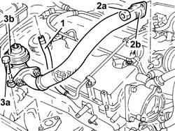
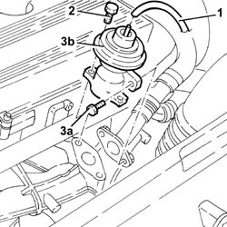

1080C10 e.g.r. valve - r + r
- Path
- Procedures > 10 ENGINE > 1080 EXHAUST EMISSION CONTROL SYSTEM > 1080C exhaust gas recirculation system (e.g.r.) > 1080C10 e.g.r. valve - r + r
- Kind
- repair procedure (removal / refitting; the operation number is the code)
- Applies to
- engines: 1.9 JTD 8v , 2.4 JTD 10v; all production periods
- Interactive page
- https://sloeber94.github.io/elrnDB-a156/en/#/3237839
Applies to: engines: 1.9 JTD 8v ; all production periods
 Removing
Removing
 Refitting
Refitting1. Disconnect the vacuum pipe from the E.G.R. valve.
2. Undo nuts (2a) and remove the exhaust gas supply pipe from the E.G.R. valve to inlet manifold (2b) on the intake manifold side.
3. Undo bolts (3a) and remove EGR valve (3b) together with the pipe carrying exhaust gas to the intake manifold.

Applies to: engines: 1.9 JTD 8v ; all production periods
Refitting
RemovingFit the E.G.R. valve, complete with exhaust gas supply pipe to the intake manifold, and fix it tightening the bolts to the recommended torque.
 | Fastening | Component | Ø | Value (daNm) |
|---|---|---|---|---|
- | Bolt | EGR VALVE | M8 | 2.1 - 2.6 |
Fit the exhaust gas supply pipe from the E.G.R. valve to the inlet manifold (intake manifold end) and fix it using the nuts.
Connect the vacuum pipe to the EGR valve.
Applies to: engines: 2.4 JTD 10v; all production periods
Removing
Refitting1. Disconnect the vacuum intake pipe from the EGR valve.
2. Unscrew the bolts securing the EGR valve to the exhaust manifold.
3. Undo bolts (3a) securing the EGR valve to the exhaust gas inlet pipe, then remove the EGR valve (3b).

Applies to: engines: 2.4 JTD 10v; all production periods
Refitting
RemovingFit the EGR valve and secure to the exhaust gas inlet pipe by tightening the bolts to the specified torque.
| Fastening | Component | Ø | Value (daNm) |
|---|---|---|---|---|
- | Nut | EGR VALVE | M8 | 2.1 - 2.6 |
Tighten the bolts securing the EGR valve to the exhaust manifold to the specified torque.
| Fastening | Component | Ø | Value (daNm) |
|---|---|---|---|---|
- | Bolt | EGR VALVE | M8 | 2.1 - 2.6 |
Connect the vacuum inlet pipe to the EGR valve.